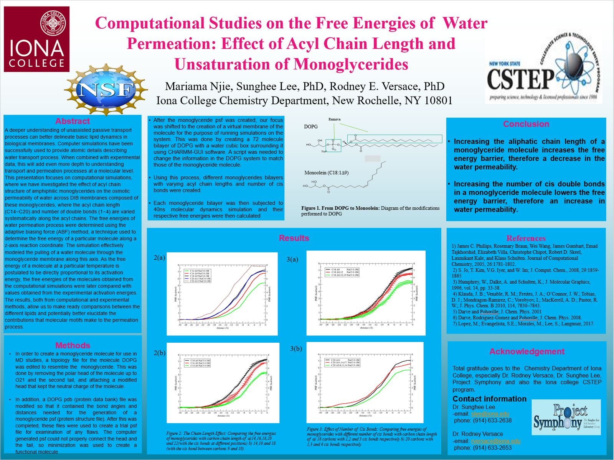

As
a research assistant in the Chemistry department at Iona College, I was tasked
with running the energy calculations of monoglyceride membranes. The
membranes were generated using CHARMM-GUI.
Specific target membranes were later generated using python scripts
(figure below). NAMD was used for the molecular dynamics simulation, while
VMD was
used for visualization. Result assembly was done using GROMACS. A summary of the methodology,
results, and conclusions is presented in the figure below. In April 2018, after
presenting the project at the 26th Annual Collegiate Science Technology
Entry Program Conference (CSTEP), an honorable mention award was accorded. An Advancing Science Conference Grant (ASCG) was also provided by
the National Organization for the Professional Advancement of Black
Chemists and Chemical Engineers (NOBCChE) in 2018 to present the project at
the 45th annual NOBCChE conference. A conference abstract was published
in 2019. Other conference presentations include the 254th American
Chemical Society (ACS) Meeting and Expo (2017) National Conference on
Undergraduate Research (NCUR) (2018), the annual Iona Scholars Day (2017, 2018,
and 2019). Sample data of the project can be found at here.
